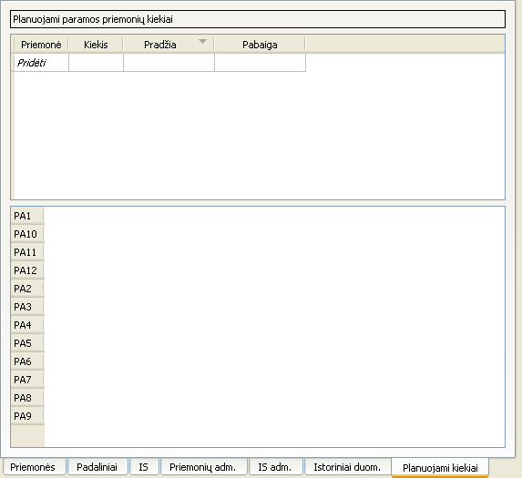

Naudojantis šia sąsaja, galima:
- Pridėti planuojamos suadministruoti paramos priemonės informaciją paspaudus apatinę lentelės eilutę
„Pridėti“
bei suvedus reikiamus duomenis: - Ištrinti vienos ar kelių planuojamų suadministruoti paramos priemonių informacijas jas pažymėjus, atidarius kontekstinį meniu ir paspaudus „Pašalinti“:
- Ištrinti vienos ar kelių planuojamų suadministruoti paramos priemonių informacijas jas pažymėjus ir paspaudus Vald+-:
- Pakeisti planuojamos suadministruoti paramos priemonės informaciją, dukart spustelėjus ant lauko, kurį norima pakeisti.

- Įvedus neegzistuojančią (planuojamą) paraiškos priemonę, atitinkama priemonė bus automatiškai sukurta (tokia paramos priemonė bus vadinama planuojama) ir jos administravimo kaštus bus leidžiama keisti apatinėje lentelėje.
- Jei paraiškos įrašas yra šalinamas, kuriame yra paskutinė nuoroda į planuojamą paraiškos priemonę, tai ta paraiškos priemonė bus ištrinta kartu su trinamu įrašu.
- Planuojami paramos priemonių kiekiai nėra saugomi DB viduje.
- Istoriniai duomenys negali rodyti į planuojamą priemonę.